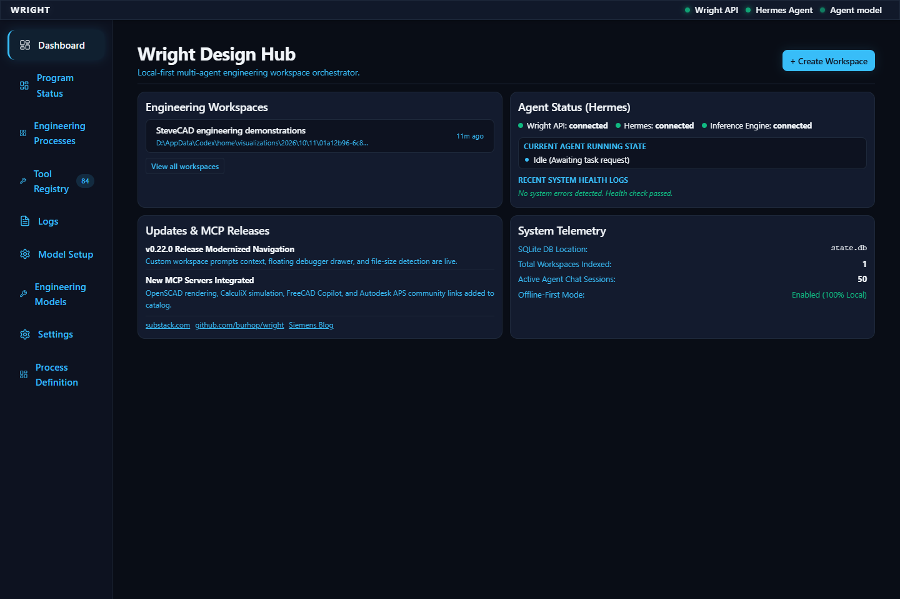
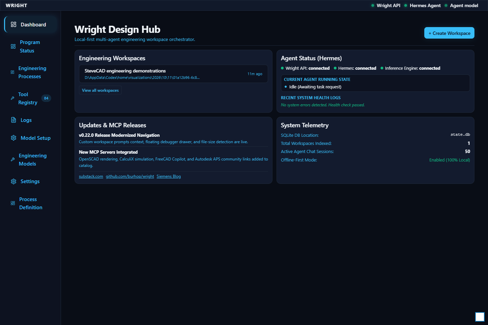

<!doctype html><meta charset="utf-8"><title>SteveCAD comparison in Wright</title><style>body{font:16px system-ui;max-width:1000px;margin:30px auto}.pass{border-left:8px solid green}.blocked{border-left:8px solid red}.pending{border-left:8px solid gray}section{padding:15px;margin:15px 0;background:#f5f5f5}img{max-width:90%}dialog{max-width:95vw}dialog img{max-height:85vh}</style><h1>SteveCAD comparison in Wright</h1><p>Stopped at Unlock the isolated local Wright instance. Earlier evidence retained; no process was run or approved.</p><h2>Repeat manually</h2><ol><li>Open Wright and unlock it with the existing private local access token. Do not share the token.</li></ol><section class="blocked"><h2>Unlock the isolated local Wright instance — blocked</h2><p>locator.waitFor: Timeout 30000ms exceeded.
Call log:
  - waiting for getByLabel('Access Token', { exact: true }) to be visible
</p><a class="image-button" href="screenshots/raw/00-stopped.png" onclick="event.preventDefault();document.querySelector('dialog img').src=this.href;document.querySelector('dialog').showModal()"></a><a class="image-button" href="screenshots/annotated/00-stopped.png" onclick="event.preventDefault();document.querySelector('dialog img').src=this.href;document.querySelector('dialog').showModal()"></a></section><dialog><button onclick="this.closest('dialog').close()">Close</button><br></dialog>